워드프로세서-(구-1급) (2005-08-28 기출문제)
1과목: 워드프로세싱 일반
1. 다음 중 공문서 작성의 일반사항과 거리가 먼 것은?
- 문서는 쉽고 간명하게 한글로 작성하되 특별한 사유가 있는 경우를 제외하고는 한글맞춤법에 따라 가로로 쓴다.
- 문서에 쓰는 숫자는 특별한 사유가 있는 경우를 제외하고는 아라비아 숫자로 쓴다.
- 문서의 작성에 쓰이는 용지의 크기는 특별한 사유가 있는 경우를 제외하고는 가로 210mm, 세로 297mm로 한다.
- 시간의 표기에서 시, 분의 표기는 12시각제에 따라 숫자로 표기하되 시, 분의 글자는 생략하고 그 사이에 쌍점(:)을 찍어 구분한다.
(정답률: 85%)

2. 다음 중 워드프로세서의 용어에 대한 설명으로 옳지 않은 것은?
- 상용구(Glossary) : 자주 사용하는 문자열을 미리 등록하였다가 필요할 때 입력시키는 기능으로 정형구 또는 약어등록이라고도 한다.
- 자동 반복(Auto Repeating) : 키보드를 누르고 있는 동안 같은 문자가 계속 입력되는 것을 말한다.
- 디폴트(Default) : 문서의 서식 등에서 기본적으로 설정되어 있는 값으로, 사용자가 특별히 지정하지 않으면 값이 그대로 적용된다.
- 보일러 플레이트(Boiler Plate) : 문서의 내용 중 참고문헌, 보충설명 등을 마지막 페이지에 설명하는 기능이다.
(정답률: 76%)
3. 다음 문서의 효력 발생에 대한 견해 중 우리나라에서 채택하고 있는 것은?
- 표백주의
- 발신주의
- 도달주의
- 요지주의
(정답률: 88%)
4. 다음 중 표 작성에 대한 설명으로 옳지 않은 것은?
- 표를 일반 텍스트 형태로 바꿀 수 없다.
- 셀을 나누거나 합칠 수 있다.
- 표를 분리하거나 합칠 수 있다.
- 표에서 블록합계를 구할 수 있다.
(정답률: 77%)
5. 다음은 워드프로세서의 ‘장평’에 대한 설명이다. 옳지 않은 것은?
- 글자의 세로의 크기는 그대로 유지한다.
- 글자의 모양에 변화를 준다.
- 글자의 가로 폭을 늘리거나 줄인다.
- 글자의 세로 폭을 늘리거나 줄인다.
(정답률: 75%)
6. 다음 중 워드프로세서의 화면표시 기능 중 격자에 관한 설명으로 옳은 것은?
- 탭 설정 여부나 오른쪽과 왼쪽의 여백, 들여쓰기, 내어쓰기, 눈금단위 등을 나타내는 곳이다.
- 자주 사용하는 메뉴를 아이콘 형태로 구성하여 빠르고, 편하게 작업할 수 있도록 한 곳이다.
- 그림을 그릴 때 정확히 간격을 맞추어 세밀한 편집을 할 수 있도록 편집화면에 가로, 세로로 나타내는 기준점이다.
- 작업할 수 있는 모든 명령들을 메뉴 형태로 구성해 놓은 것이다.
(정답률: 65%)
7. 다음 중 A3용지에 비해 가로의 길이가 1/2, 세로의 길이가 1/2인 용지로 옳은 것은?
- A4
- A5
- B4
- B5
(정답률: 56%)
8. 다음 중 문서 작성시에 사용되는 바로가기 키에 대한 설명으로 옳지 않은 것은?
- 조합된 키를 눌러서 빠르게 지시를 내리는 기능을 의미한다.
- 대표적인 바로 가기키로는 [Ctrl]+[C], [Ctrl]+[X], [Ctrl]+[V] 등이 있다.
- 동일한 바로 가기키가 프로그램에 따라 전혀 다른 기능을 수행하는 경우도 있으므로 주의해야 한다.
- 바로 가기키는 마우스 오른쪽 버튼을 눌러 나타나는 바로 가기 메뉴에서 선택한다.
(정답률: 65%)
9. 다음 각 용어에 대한 설명 중 잘못된 것은?
- 하드 카피(Hard Copy) : 소프트 카피에 반대되는 개념으로 화면 그대로를 프린터에 인쇄하는 것을 말한다.
- 프린터 버퍼(Printer Buffer) : 인쇄한 내용을 임시 보관하는 장소로 용량을 크게 할수록 기억장소를 많이 차지하여 출력속도가 느리다.
- 용지 넘김(Form Feed) : 프린터에서 다음 페이지의 맨 처음 위치까지 종이를 밀어 올리는 것을 말한다.
- 프린터 드라이버(Printer Driver) : 워드프로세서의 산출 된 출력 값을 특정 프린터 모델이 요구하는 형태로 번역해 주는 프로그램을 말한다.
(정답률: 71%)
10. 다음 여러 가지 용어에 대한 설명 중에서 옳지 않은 것은?
- EDI : 네트워크를 통한 업무의 교환 시스템으로 문서의 표준화를 전제로 운영된다.
- DTP : 전자출판 또는 탁상출판
- E-mail : 네트워크를 이용한 전자우편
- CWP : 문서 작성시 사용할 수 있도록 만들어 놓은 그래픽 데이터의 모음
(정답률: 80%)
11. 다음 중 표시장치(CRT)에 대한 설명으로 옳지 않은 것은?
- 도트 피치의 값이 크면 클수록 화면은 선명하다.
- 화소(Pixel)의 수가 많으면 많을수록 해상도가 높다.
- 표시장치의 화면 크기는 대각선의 길이로 나타낸다.
- 화면 주사율이 낮으면 화면 떨림 현상이 발생하여 눈에 피로감을 줄 수 있다.
(정답률: 69%)
12. 다음 중 도구 상자(Tool Box)에 대한 설명으로 옳지 않은 것은?
- 자주 사용되는 메뉴를 아이콘(Icon) 형태로 나타낸 것이다.
- 본문 화면의 크기에 영향을 미친다.
- 도구 상자의 구성은 고정되어 있으므로, 위치를 바꾸거나 재구성할 수 없다.
- 비슷한 기능을 갖는 아이콘(Icon)들을 묶어 하나의 도구 모음으로 구성한다.
(정답률: 78%)
13. 다음 중 플로피 디스크의 용량을 계산할 때 필요한 요소가 아닌 것은?
- 트랙(Track)
- 실린더(Cvlinder)
- 섹터(Sector)
- 면(Side)수
(정답률: 67%)
14. 다음 중 문서의 간인이 필요하지 않는 경우는?
- 법률관계의 결과가 확인된 문서
- 허가, 인가 및 등록 등에 관계되는 문서
- 전후관계를 명백히 할 필요가 있는 문서
- 사실 또는 법률관계의 증명에 관계되는 문서
(정답률: 78%)
15. 다음 중 저장기능에 대하여 설명한 것으로 옳지 않은 것은?
- 주기억장치는 RAM에 기억되어 있던 문서를 보조기억장치로 옮기는 것을 말한다.
- 워드프로세서에서 기본으로 제공하는 하나의 파일 형식으로만 저장할 수 있다.
- 저장된 파일 형태에 따라 확장자가 다르다.
- 일반적으로 확장자 TXT로 저장된 문서는 메모장이나 워드패드에서 편집이 가능하다.
(정답률: 71%)
16. 다음 중 오려두기(Cut)와 복사하기(Copy) 기능의 공통점이 아닌 것은?
- 영역을 지정하여 사용할 수 있다.
- 사용 후 문서의 크기에는 변화가 없다.
- 사용 중 클립보드(Clipboard)를 사용한다.
- 임시로 저장된 데이터를 지정한 위치에 붙여넣기 할 수 있다.
(정답률: 80%)
17. 다음 중 워드프로세서의 기능에 대한 설명으로 옳지 않은 것은?
- 문서 편집 시 행의 처음이나 끝에 특정 문자가 올 수 없도록 하는 것을 금칙처리하고 한다.
- 수정 전 파일과 수정 후 파일을 한 번에 저장할 수 있다.
- 복사, 붙여넣기, 이동, 삭제를 위하여 반드시 영역지정이 필요하다.
- 영역으로 지정한 부분만을 별도로 저장할 수 있다.
(정답률: 71%)
18. 다음의 보기에서 설명하는 워드프로세서의 기능은?
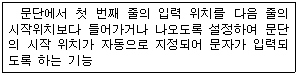
- 인덴트(Indent)/아웃덴트(Outdent)
- 옵션(Option)
- 다단 편집
- 래그드(Ragged)
(정답률: 90%)
19. 다음 중 서로 상반되는 의미를 나타내는 교정부호끼리 짝지어진 것은?
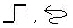
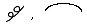
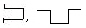
(정답률: 88%)
20. 다음 중 <보기 1>의 문장이 <보기 2>의 문장으로 수정되기 위해 필요한 교정부호들로만 올바르게 짝지어진 것은?
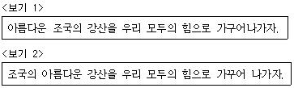
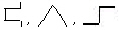
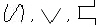
(정답률: 92%)
2과목: PC 운영 체제
21. 한글 Windows 98이 설치된 컴퓨터를 부팅할 때, ROM-BIOS에 있는 검사 프로그램에 의해 시스템의 하드웨어를 자동으로 검사하는 기능은?
- OnNow기능
- MTU 설정 기능
- POST 기능
- Back Up 기능
(정답률: 63%)
22. 다음 중 한글 Windows 98의 [제어판]에 있는 [키보드]의 등록정보 창에서 설정할 수 있는 옵션 기능이 아닌 것은?
- 필터키 사용 설정
- 키 재입력 시간 설정
- 커서 깜박임 속도 설정
- 설치된 키보드 언어 및 키 배치 설정
(정답률: 70%)
23. 다음 한글 Windows 98의 [시스템 도구]에 있는 [디스크 검사] 프로그램의 기능에 관한 설명으로 옳지 않은 것은?
- [디스크 검사] 창에서 검사할 디스크를 선택하고 [ 시작] 버튼을 누르면 실행된다.
- 오류가 발생한 파일 조각에 대한 복구 기능을 전혀 제공하지 않는다.
- 검사 유형으로는 [표준 검사]와 [정밀 검사]가 있다.
- 여러 드라이브를 한번에 검사하고자 할 경우에는 드라이브 선택 창에서 [Shift]키나 [Ctrl]키를 마우스 버튼과 함께 사용하여 선택하면 된다.
(정답률: 69%)
24. 다음 중 한글 Windows 98의 [제어판]에 있는 [암호]와 관련된 설명으로 옳지 않은 것은?
- 한 대의 PC를 여러 사람이 사용할 경우에 사용자마다 다른 암호를 지정하고 다른 작업 환경을 설정할 수 있다.
- 입력된 암호는 C:WindowsSystem폴더에 사용자 이름의 파일명과 ‘.ini'의 확장자를 갖는 파일로 저장된다.
- [암호 등록정보] 창의 [사용자 초기화 파일] 탭에서 ‘사용자마다 다른 기본 설정 및 바탕화면 사용’ 옵션을 이용하면 사용자마다 바탕 화면의 모양과 기본 설정 사항을 다르게 할 수 있다.
- 부팅할 때 나타나는 [네트워크 암호] 대화상자에 입력할 암호를 잊는 경우에 [Esc] 키를 누르면 Windows로 바로 부팅이 된다. 이 때 암호 파일(*.pwl)을 찾아 삭제하면 다음 Windows를 부팅할 때 새롭게 암호를 등록할 수 있다.
(정답률: 55%)
25. 한글 Windows 98의 [탐색기]에서 폴더 목록창에 있는 어떤 폴더를 선택하였을 때,[탐색기]의 하단에 있는 상태 표시줄에 표시되는 내용이 아닌 것은?
- 폴더 목록창에 선택된 폴더의 하위 폴더나 파일의 개체 수
- 폴더 목록 창에서 폴더를 선택하였을 때 해당 폴더의 전체 경로
- 폴더 목록 창에서 폴더를 선택하였을 때 해당 폴더가 차지하는 디스크 공간의 양
- 폴더 목록 창에서 폴더를 선택하였을 때 남아있는 디스크 공간의 양
(정답률: 57%)
26. 다음 중 한글 Windows 98에서 파일 또는 폴더의 [찾기] 창에 대한 설명으로 옳지 않은 것은?
- 파일이나 폴더의 속성을 조건으로 검색할 수 있다.
- 바뀐 날짜의 이전 몇 일이라는 조건으로 검색할 수 있다.
- 포함하는 문자열을 조건으로 검색할 수 있다.
- 파일 크기의 조건으로 검색할 수 있다.
(정답률: 55%)
27. 한글 Windows 98에서 메모장을 이용하여 텍스트 문서를 열 때마다 시스템 시계를 참조하여 현재의 시간과 날짜를 문서의 끝에 자동으로 추가되도록 하려 한다. 다음 중 옳은 것은?
- 시스템 트레이에 있는 시간을 끌어다 문서의 원하는 위치에 놓는다.
- 문서의 첫 행 왼쪽에 .LOG라고 입력한다.
- [편집] 메뉴의 시간/날짜를 사용한다.
- 문서의 적당한 위치에 커서를 놓고 기능키 [F5]를 누른다.
(정답률: 63%)
28. 다음 중 한글 Windows 98에서 [휴지통]에 관한 설명으로 옳지 않은 것은?
- 휴지통의 용량은 운영체제에 의해서 항상 고정된 크기를 가진다.
- 휴지통에는 삭제된 파일들이 보관되며, 삭제된 파일을 복원할 수도 있다.
- 휴지통의 등록정보를 설정하여 파일이 휴지통에 보관되지 않고 바로 삭제되도록 할 수 있다.
- 삭제되었던 파일을 복원하면 삭제되기 전과 동일한 폴더에 복원된다.
(정답률: 80%)
29. 한글 Windows98에서 IP 주소가 210.211.202.1인 컴퓨터에서 공유 이름이 ‘시험’인 폴더를 지정하는 방법으로 가장 적절한 것은?
- 210.211.202.1\시험
- 210.211.202.1.시험
- \\210.211.202.1\시험
- \\210.211.202.1.시험
(정답률: 68%)
30. 아래의 그림은 한글 Windows98의 메모장 프로그램에서 [열기] 메뉴를 선택하였을 때 열기 대화 상자이다. 이 대화 상자 내에 있는 윈도우의 구성요소가 아닌 것은?
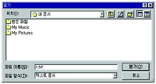
- 콤보상자
- 명령단추
- 입력상자
- 옵션단추
(정답률: 59%)
31. 한글 Windows 98의 [프린터 추가] 기능에 관한 설명으로 옳지 않은 것은?
- [프린터] 폴더에서 [프린터 추가] 아이콘을 선택한 후, 프린터 추가 마법사를 이용해서 프린터를 설치할 수 있다.
- 한 시스템 내에 설치될 수 있는 프린터의 수는 3대로 제한된다.
- 추가 가능한 프린터는 연결 상태에 따라 로컬 프린터와 네트워크 프린터로 구분된다.
- 프린터를 추가할 때 대상 프린터를 기본 프린터로 설정할 수 있다.
(정답률: 82%)
32. 다음 중 한글 Windows 98에서 오디오 설정 및 [보조 프로그램]의 [CD 재생기]에 대한 설명으로 옳지 않은 것은?
- [제어판]-[시스템]의 [장치 관리자]탭에서 해당 CD-ROM을 선택한 다음 [등록 정보]-[설정] 탭에서 ‘자동 삽입 통지’를 체크하지 않으면 자동 실행을 해제할 수 있다.
- CD-ROM에 연결된 헤드폰을 사용하거나, 사운드 카드가 있을 경우 스피커를 통해 소리를 들을 수 있다.
- 작업 표시줄의 트레이 영역에 스피커 아이콘이 없는 경우에는 [제어판]-[사운드]의 [오디오]탭에서 ‘작업 표시줄에 볼륨 조절 표시’ 확인란을 선택하면 된다.
- 오디오 CD를 넣을 때 자동으로 CD 재생기가 실행되는 것을 막으려면 [Shift]키를 누른 상태에서 CD를 넣는다.
(정답률: 56%)
33. 다음 중 한글 Windows 98의 작업 표시줄과 관련된 내용으로 옳지 않은 것은?
- 작업 표시줄은 화면 위쪽이나 아래, 왼쪽, 오른쪽에 위치시킬 수 있다.
- 작업 표시줄은 화면의 2/3를 넘지 않는 범위 내에서 크기 변경이 가능하다.
- 작업 표시줄에 경계선에 마우스를 위치시킨 후 마우스로 드래그하여 작업 표시줄의 크기를 조절할 수 있다.
- 작업 표시줄을 이동하기 위해서는 작업 표시줄의 비어 있는 부분을 마우스로 드래그하면 된다.
(정답률: 78%)
34. 한글 Windows 98의 [제어판]에 있는 [마우스]를 선택하여 나타나는 [마우스 등록정보] 창에서 할 수 없는 것은?
- 왼손잡이를 위한 단추 설정을 할 수 있다.
- 두 번 클릭 속도를 조정할 수 있다.
- 포인터의 이동 자취를 표시할 수 있다.
- 포인터의 움직임 기능을 해제할 수 있다.
(정답률: 77%)
35. 다음의 보기 내용과 관련이 있는 한글 Windows98의 시스템 도구는?
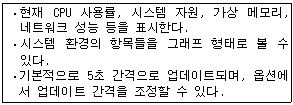
- 시스템 모니터
- 리소스 측정기
- 시스템 정보
- 시동 디스크
(정답률: 44%)
36. 다음은 한글 Windows98의 부팅 단계의 일부분이다. 부팅 순서에 맞게 나열된 것은?
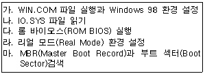
- 다 - 마 - 나 - 라 - 가
- 마 - 다 - 나 - 라 - 가
- 다 - 마 - 라 - 나 - 가
- 다 - 나 - 마 - 라 - 가
(정답률: 51%)
37. 한글 Windows 98의 [탐색기]에서 사용할 수 있는 바로 가기 키를 설명한 것으로 옳지 않은 것은?
- [BackSpace]키를 누르면 상위 폴더로 이동한다.
- [Ctrl+A]키를 누르면 현재 폴더의 모든 하위 폴더 및 파일을 선택한다.
- [F5]키를 누르면 탐색기에서 선택한 응용 프로그램을 실행시킬 수 있다.
- [F2]키를 누르면 폴더나 파일의 이름을 변경할 수 있다.
(정답률: 73%)
38. 한글 Windows98에서 인터넷을 사용하기 위해 TCP/IP를 수동으로 설정하려고 할 때, TCP/IP 등록정보 창에서 반드시 설정해야 할 탭이 아닌 것은?
- 게이트웨이
- WINS 구성
- IP 주소
- DNS 구성
(정답률: 62%)
39. 한글 Windows 98에서 프로그램의 추가와 제거에 대한 설명으로 옳지 않은 것은?
- 일반적으로 setup 또는 install 프로그램을 사용하여 설치한다.
- [제어판]의 [프로그램 추가/제거]를 이용하여 프로그램을 설치할 수 있다.
- setup 또는 install 프로그램을 사용하여 설치한 프로그램은 대부분 시스템 레지스트리에 프로그램 정보가 기록된다.
- [프로그램 추가/제거] 등록정보의 [Windows 설치] 탭에서 구성 요소를 추가하는 경우에는 setup 또는 install 프로그램을 더블클릭하여 실행한다.
(정답률: 51%)
40. 한글 Windows 98의 네트워크 구성 요소에 대한 설명으로 옳지 않은 것은?
- 마이크로소프트 네트워크 클라이언트는 다른 윈도우 시스템과 연결할 수 있고, 파일과 프린터를 공유할 수 있게 한다.
- TCP/IP는 인터넷을 사용하기 위하여 기본적으로 필요한 프로토콜이다.
- DNS는 사용자에게 친숙한 문자 주소를 IP 숫자 주소의 형태로 바꾸어 주는 기능을 한다.
- WWW를 사용하기 위해서는 TCP/IP 프로토콜과 더불어 HTTP 프로토콜을 [제어판]의 [네트워크]에 추가하여야 한다.
(정답률: 60%)
3과목: 컴퓨터 및 정보활용
41. 현재 하나의 EIDE 방식의 하드디스크가 장착된 컴퓨터를 사용하고 있는데 기존의 하드디스크는 부팅 디스크로 두고 새로운 EIDE 방식의 하드디스크를 데이터 저장을 위해 추가로 설치하려고 한다. 다음 중 옳지 않은 것은?
- 부팅 디스크가 연결된 Primary IDE에 연결할 경우 새 하드디스크의 점퍼 설정을 Slave로 해준다.
- Master 모드의 CD-ROM이 연결된 Secondary IDE에 연결하고자 한다면 CD-ROM의 점퍼를 Master 모드로 유지하고 새 하드디스크의 점퍼 설정을 Master로 설정한다.
- 올바르게 장착하였는데 새 하드디스크를 자동으로 인식하지 못하면 수동으로 CMOS 설정을 해준다.
- 운영체제가 새 하드디스크를 인식할 수 있도록 FDISK와 같은 유틸리티로 파티션(Partition)을 만들어 준다.
(정답률: 57%)
42. 다음 용어 중에서 하드웨어나 소프트웨어의 성능을 검사하기 위해 실제로 사용되는 조건에서 처리 능력을 테스트하는 것을 무엇이라고 하는가?
- 버그 테스트
- 베타 테스크
- 메모리 테스트
- 벤치마크 테스트
(정답률: 73%)
43. 다음은 동기식 전송 방식에 대한 설명이다. 옳지 않은 것은?
- 동기식 전송 방식은 한번에 한 글자씩 전송되며, 시작 비트(start bit)와 정지 비트(stop bit)를 갖는다.
- 동기식 전송 방식은 한꺼번에 미리 정해진 블록만큼 전송(문자열 방식)하는 방식이다.
- 동기식 전송 방식에는 문자 동기 방식과 비트 동기 방식이 있다.
- 동기식 전송 방식은 송신기와 수신기의 동기를 위한 동기문자를 사용한다.
(정답률: 50%)
44. 다음 설명 중에서 옳지 않은 것은?
- 하이퍼미디어 : 미디어와 미디어를 연결하여 관련된 정보를 쉽게 찾아볼 수 있도록 한 방식
- VRML : 2차원 그래픽을 구현하기 위한 인터넷 표준 언어
- CD-ROM 타이틀 : CD-ROM에 기록된 대용량의 소프트웨어
- VOD(주문형 비디오) : 시청자의 요구에 따라 비디오 프로그램을 즉각 전송해 주는 서비스
(정답률: 68%)
45. 다음 보기의 내용은 무엇에 대하여 설명한 것인가?
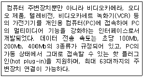
- USB 1.1
- USB 2.0
- IEEE 1394
- SCSI
(정답률: 74%)
46. 다음 중 PC를 업그레이드 하려고 할 때 고려해야 할 사항으로 적당하지 않은 것은?
- 하드 디스크의 경우 EIDE나 SCSI 방식인지 알아보아야 한다.
- 펜티엄 2를 펜티엄 4로 업그레이드하려면 CPU만 교체해 주면 된다.
- 메모리를 업그레이드하는 경우 자신의 PC 메모리가 몇 핀(pin)짜리인지 살펴보고 적당한 것을 선택한다.
- 자신의 컴퓨터를 업그레이드할 때 어떤 이득이 있는지 면밀히 검토해 보고 업그레이드하여야 한다.
(정답률: 72%)
47. 다음 중 보안을 위해 전자 서명에 사용되는 기술이 아닌 것은?
- 인증(Authentication)
- 무결성(Integrity)
- 부인방지(Non-repudiation)
- 폐쇄성(Closeness)
(정답률: 71%)
48. 다음 중 웹을 통한 전자 상거래 사이트가 안전한지, 안전하지 않은지를 알 수 있는 방법으로 가장 거리가 먼 것은?
- URL이 https://로 시작하는지 살펴본다.
- Verisign 등의 디지털 인증서 설치 여부를 확인한다.
- 브라우저의 상태표시줄에 자물쇠 모양이 나타났는지 살펴본다.
- SLIP 프로토콜로 연결되었는지 살펴본다.
(정답률: 59%)
49. 기존 응용 프로그램의 오류 수정이나 성능 향상을 위해 프로그램의 일부 파일을 변경해 주는 프로그램을 무엇이라고 하는가?
- 패치 프로그램(Patch Program)
- 링킹 프로그램(Linking Program)
- 응용 프로그램(Application Program)
- 채팅 프로그램(Chatting Program)
(정답률: 84%)
50. 다음은 무엇에 대한 설명인가?
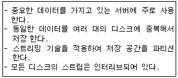
- DVD
- RAID
- Jike Box
- Jaz Drive
(정답률: 75%)
51. 다음 중 캐시메모리(Cache Memory)에 대한 설명으로 옳지 않은 것은?
- 캐시 메모리는 기억 용량은 작으나 속도가 아주 빠른 버퍼 메모리이다.
- 캐시 메모리는 가능한 최대 속도를 얻기 위해 소프트웨어로 구성한다.
- 캐시 메모리의 기본적인 성능은 히트율(Hit Ratio)로 표현한다.
- 캐시 메모리는 CPU와 주기억 장치 사이에 위치한다.
(정답률: 52%)
52. LAN의 구성 방법 중 일반적인 방법이 아닌 것은?
- star 통신망
- ring 통신망
- grid 통신망
- bus 통신망
(정답률: 71%)
53. 기업체, 은행 등의 본 · 지점 간에 발생하는 내부 업무처리를 위해 별도의 네트워크를 구축하기보다 인터넷망을 사용할 경우 재택 근무가 가능해지고 어디에서나 회사 네트워크에 연결하여 작업을 할 수 있게 되었다. 이와 같이 인터넷망을 이용하여 회사 업무의 네트워크를 구축한 것을 무엇이라고 하는가?
- Intranet
- InterLAN
- VAN
- OSI
(정답률: 74%)
54. 다음 중 5세대 컴퓨터의 주요 특징에 해당하는 내용이 아닌 것은?
- 경영정보시스템(Management Information System)
- 인공지능(Artificial Intelligence)
- 전문가시스템(Expert System)
- 퍼지이론(Fuzzy Theory)
(정답률: 60%)
55. 다음 중 RISC 프로세서의 특징으로 옳은 것은?
- 복잡하고 기능이 많은 명령어로 구성
- 많은 수의 레지스터 사용
- 복잡한 주소 지정 방식 채택
- 다양한 크기(Size)의 명령어 집합 사용
(정답률: 57%)
56. OSI 7계층은 기종이 서로 다른 컴퓨터 간에 통신을 원활히 하기 위해 ISO에서 제안한 계층 모델이다. OSI 7 계층을 최하위 계층부터 순서대로 바르게 나열한 것은?
- 물리계층 - 데이터링크계층 - 네트워크계층 - 전송계층 - 세션계층 - 표현계층 - 응용계층
- 물리계층 - 데이터링크계층 - 전송계층 - 네트워크계층 - 세션계층 - 표현계층 - 응용계층
- 물리계층 - 데이터링크계층 - 세션계층 - 네트워크계층 - 전송계층 - 표현계층 - 응용계층
- 물리계층 - 데이터링크계층 - 네트워크계층 - 세션계층 - 전송계층 - 표현계층 - 응용계층
(정답률: 66%)
57. 컴퓨터 시스템에서 운영체제의 목적은 유한한 리소스의 효율적인 관리이다. 다음 중 운영체제가 관리하는 리소스의 종류와 거리가 먼 것은?
- 주기억장치
- 프로세서 스케줄
- BIOS
- 그래픽카드
(정답률: 69%)
58. 다음 중 자기디스크의 데이터 액세스 시간(Access Time)을 바르게 나타낸 사항은?
- 디스크 데이터 액세스 시간 = 위치 설정 시간(Seek Time) + 회전 대기 시간(Latency Time) + 사이클 시간(Cycle Time)
- 디스크 데이터 액세스 시간 = 위치 설정 시간(Seek Time) + 회전 대기 시간(Latency Time) + 데이터 전송 시간 (Data Transfer Time)
- 디스크 데이터 액세스 시간 = 실행 시간(Execution Time) + 접근 시간(Access Time) + 대기시간(Waiting Time)
- 디스크 데이터 액세스 시간 = 유휴 시간(Idle Time) + 판독 시간(Read Time) + 데이터 전송 시간(Data Transfer Time)
(정답률: 65%)
59. 컴퓨터를 이용하여 업무를 효율적으로 처리하고자 할 경우에는 논리적이고 체계적인 프로그램을 작성하는 것이 중요하다. 일반적인 프로그래밍 순서를 올바르게 나열한 것은?
- 업무분석 → 입출력 설계 및 흐름도 작성 → 문서화 → 코딩 → 번역 및 오류 수정 → 테스트 → 실행
- 업무분석 → 입출력 설계 및 흐름도 작성 → 코딩 → 번역 및 오류수정 → 테스트 → 실행 → 문서화
- 업무분석 → 테스트 → 문서화 → 입출력 설계 및 흐름도 작성 → 번역 및 오류수정 → 코딩 → 실행
- 업무분석 → 입출력 및 설계 및 흐름도 작성 → 코딩 → 번역 및 오류수정 → 실행 → 문서화 → 테스트
(정답률: 65%)
60. 다음은 CD-ROM을 인터페이스(Interface) 방식에 따라 분류한 것이다. 해당되지 않는 것은?
- AT-BUS 방식
- IDE 방식
- CDMA 방식
- SCSI 방식
(정답률: 57%)